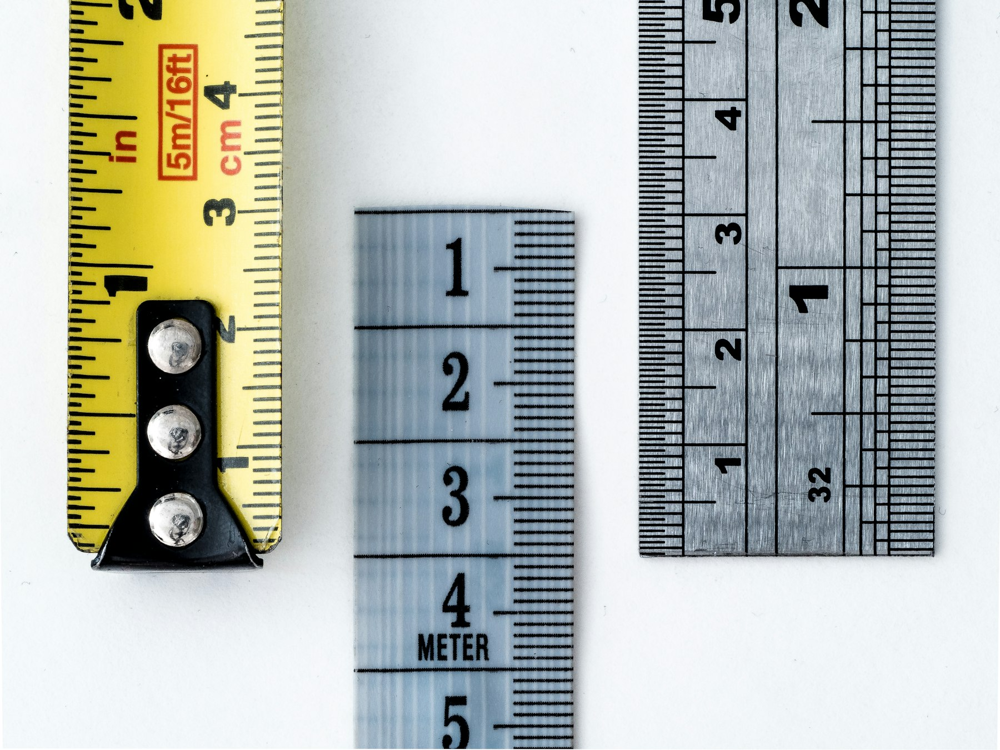
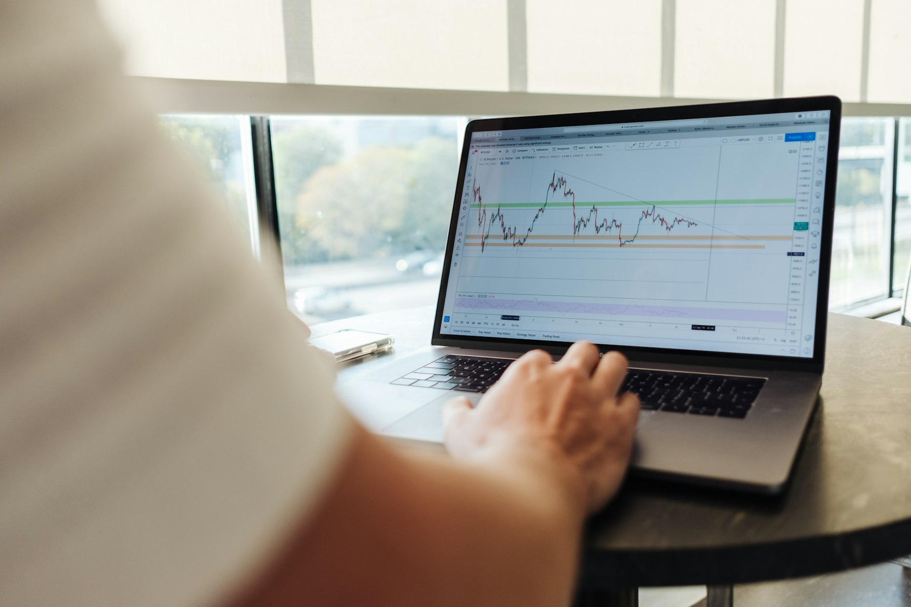

TL;DR
Check net performance monthly—don’t confuse deposits with gains. For less than $1,000, free broker snapshots or Sharesight work well. For larger or multi-asset portfolios, use Portfolio Performance or Kubera. Always factor in fees and compare to a simple benchmark (SPY or IWDA). Set a monthly calendar reminder to build consistency.
Quick Verdict: The Fastest Way to Judge Your Monthly Investment Results
You don’t need a finance degree or advanced analytics—most beginners can effectively review their monthly performance by tracking net gains, total contributions, and fees. For example, if you invested $500 at the start of the month and ended with $505, but paid $2 in fees, your real progress is closer to $3.
Sounds simple, but the real mistake is stopping here. Many investors ignore the drag of fees and the real-world impact of timing—the difference between a monthly review on the 1st versus the 28th might skew your perception.
A quick first step: pull up your brokerage platform (like Fidelity, Interactive Brokers, or Trade Republic), export your monthly statement, and note your starting balance, ending balance, total deposits, and costs. Actual review time: under 10 minutes per month for most brokers.
But don’t skip a reality check: If you spot bigger swings than expected (+2% or -4%) when your mix is mostly index ETFs, it’s time for a closer look. The real tradeoff is speed versus detail—a monthly snapshot is fast, but misses hidden risks. Most beginners only realize this after a few cycles when gains vanish due to timing errors or ignored fees.
In practice: Use an app like Sharesight or Portfolio Performance (EU users) to automate these calculations. These tools pull in live prices and transaction data, so you’re not stuck with spreadsheets or manual sums. Worth the 10-15 minute setup.
Best for: Anyone starting with less than $1000 who just wants to build the monthly review habit.
Who Each Review Method Is Best Suited For—and Why This Matters

Different investors need different tracking styles—knowing your type helps avoid mistake number one: using the wrong metric for your situation.
Monthly app dashboards (like Robinhood’s or eToro’s built-in displays) are best for pure beginners who want a quick update and don’t care (yet) about deep analysis. The main strength is simplicity—just log in, glance at your total change, and move on. The main weakness: these views often ignore contributions—so a sudden jump could just be your new $100 deposit, not real gains.
Meanwhile, spreadsheet trackers (Excel, Google Sheets) or multi-tool platforms like Sharesight let you log every transaction, dividend, and fee. Here, the tradeoff is setup time and discipline versus accuracy. If you’re tracking over $10,000, or want to separate performance from cash flow, this is mandatory. Beginners who skip this usually make a mistake by chasing returns, ignoring risk exposure.
For example, US readers with a mix of S&P 500 ETFs (e.g., VOO) and tech stocks might want weekly auto-imports with alerts if their risk or allocation drifts by more than 5%. EU investors balancing MSCI World (e.g., iShares IWDA) vs.
emerging markets may need to factor in currency swings and tax. Decision: Simple app for sub-$5,000 portfolios; advanced tracking as soon as your mix grows or you want to optimize monthly contributions.
Where the Differences Start to Matter: Risk, Fees, and When to Check
Timing, risk, and cost tracking change everything. A monthly check on the 1st may hide a sharp mid-month drop—so a smarter workflow uses both a weekly glance and a monthly deep review. Here’s where common mistakes show up.
Step 1. Every week, check your allocation breakdown (e.g., are you still 80% ETF, 20% single stocks?). Most AI-powered apps like Kubera (US/EU) or Portfolio Performance (open-source) offer visual breakdowns—one click shows if your mix slipped.
Step 2. Every month, review net performance: calculate net change after accounting for any contributions or withdrawals. Example: €500 start, plus €200 deposit, €20 gain (ending balance €720 with fee of €2). Real net gain: (€720-€500-€200) - fees = €18.
Step 3. Compare your return versus a simple benchmark—SPY ETF (US) or IWDA (EU). If you’re lagging by more than 1-2% per month and taking more risk (single stocks with big swings), that’s a red flag.
Step 4. Audit costs—high fees or transaction costs add up fast. Holding US mutual funds with a 0.6% expense ratio when you could use a 0.07% ETF is a classic hidden drag.
Tradeoff: Checking too frequently can cause knee-jerk reactions; too rarely, you miss slow leaks. Where this breaks down: Late fees or poorly timed trades (e.g., buying right after a rally) can wipe out monthly gains.
A related cluster: See our comparisons of free vs. paid portfolio trackers and the true cost of robo-advisors.
A Beginner’s Monthly Review Scenario: Real Numbers, Real Steps

Scenario: Ella, a new investor in the EU, started February with €1,000 in iShares Core MSCI World (IWDA) via Trade Republic. She also bought €100 of Apple stock. Her aim: see if she’s really making progress after her first month.
Here’s how Ella runs her review: 1. She checks her Trade Republic app: ending balance is €1,135. 2. She contributed an additional €50 during the month. 3. Brokerage statement shows €3 in transaction fees. 4. She notes Apple went up €15, IWDA up €67.
Analysis: Starting: €1,000. Deposits: €50. Ending: €1,135. Net change before fees: €1,135 - €1,000 - €50 = €85. After fees: €85 - €3 = €82 net gain. Monthly gain: €82 / (€1,000 + €50 average invested) ≈ 7.8% monthly return (NOT annualized).
Decision: Ella realizes IWDA moved steadily, Apple was more volatile. By breaking gains down by position, she can see where risk lives. Mistake avoided: Ella almost counted her €50 deposit as performance—a very common error for beginners.
In practice, she sets a reminder for a review on the 1st of each month. If her gain drops below 2% next month, she plans to check if it’s market-wide or just her selection. This workflow keeps her eyes on both overall growth and what’s really working.
Mistakes and Overkill: Where Beginners Go Wrong in Monthly Reviews
Most new investors fall into at least one of these traps:
Mistake: Only tracking total account value, ignoring deposits and withdrawals. This leads to overestimating gains when adding money during a strong month.
Mistake: Chasing highest monthly returns without respect to risk or volatility. Buying more of a hot stock after a 12% pop last month often ends in regret.
Overkill: Building complex spreadsheets or using heavy apps like Personal Capital (now Empower) when your portfolio is under $1,000. The decision time and setup overhead isn’t worth the marginal accuracy at this stage.
Mistake: Ignoring fees—especially transfer out, currency conversion, or buy/sell commissions. A round-trip fee of €7 on a €100 trade erases a 7% short-term gain instantly.
Edge case: Reviewing too late in the month can skew the picture—one late-day market drop gives a false sense of loss. Fix: Always compare review dates month-on-month.
External factors: Don’t forget to scan for macro events (rate hikes, major company earnings) that may influence your results.
In practice: Keep an eye on alternatives, like switching from high-fee mutual funds to lower-cost ETFs once your balance justifies the move. See our portfolio allocation checklist for deciding when rebalancing is worth it.
Final User-Based Recommendation: Pick Your Review System Based on Size and Habits
No approach fits everyone—your review system should match both your portfolio size and your willingness to check in. Here’s the decision map:
Best for pure beginners (under $1,000 or €1,000): Use your broker’s monthly performance snapshot or a no-cost app like Sharesight up to the free tier. Benefit: Quick to set up, no overkill, builds the monthly review habit.
Best for committed trackers (over $5,000): Set up an app like Portfolio Performance (open-source, great for EU) or Kubera ($15/month, flexible for US and international). These can import data, break out performance vs. deposits, and alert you to drift.
Not ideal for: Spreadsheet tracking if you forget to log new contributions—missing one update ruins accuracy.
Critical tradeoff: Simpler tools are easier to stick with, but lack deeper analysis. Full-featured tools are best once you have enough at stake to make detail matter.
Final decision: Let your portfolio size and your personality drive the level of detail—begin with simple tools, upgrade only when you want monthly reviews that drive real action.
FAQ
What metrics should I focus on for investment evaluation?
Start with net performance: (ending balance - starting balance - new contributions - fees). For deeper tracking, measure gains by position (stock, ETF), percent return per month, and compare to a simple benchmark like the S&P 500 or MSCI World. Always adjust for deposits and withdrawals to avoid a common mistake.
How often should I review my investment performance?
A quick weekly glance helps spot allocation drift or big swings. A detailed monthly review (preferably on the same calendar day each month) is the minimum for catching fee mistakes or portfolio issues, and matches how most AI tools generate reporting.
Which tools make it easiest to automate monthly performance tracking?
Sharesight (free up to 10 holdings), Portfolio Performance (open-source, great for EU/UK), and Kubera (paid, global support) are top choices. Each can auto-import transactions and create monthly performance dashboards. Your broker’s built-in tracking is fast, but often misleading if you deposit money frequently.
How do fees impact my real monthly results?
Even low percentage fees can eat significant gains over time. For example, a 0.60% annual fee on a $10,000 portfolio costs $5 per month, which can cancel small monthly gains. Transaction costs and currency conversion add up fast in active portfolios—always subtract these before evaluating performance.
What’s a common beginner mistake with monthly reviews?
Counting new contributions as gains, ignoring fees, and chasing the best return without accounting for added risk. Many beginners also switch tools or methods too often, making it hard to spot real patterns.
This article was reviewed for practical usefulness and clarity, and will be updated if leading tools, costs, or workflows change. Always remember: this is educational content, not personal investment advice.
Next step
Use the article as a decision point, not just reading material. Your next system matters more than more browsing.
Search more articles
Find related tools, workflows, and guides.
Photo credits
- Photo 1: Алекс Арцибашев via Unsplash
- Photo 2: William Warby via Unsplash
- Photo 3: Towfiqu barbhuiya via Unsplash
- Photo 4: Jason Briscoe via Unsplash
- Photo 5: JOHN TOWNER via Unsplash
- Photo 6: Hello Revival via Unsplash